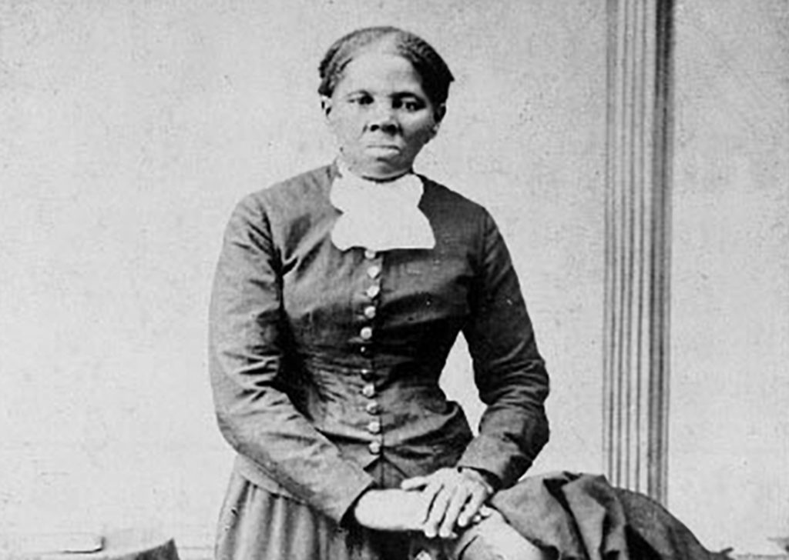

Students explore key topics that extend from early African kingdoms to the ongoing challenges and achievements of the contemporary moment. Given the interdisciplinary character of African American studies, students in the course will develop skills across multiple fields, with an emphasis on developing historical, literary, visual, and data analysis skills. This course foregrounds a study of the diversity of Black communities in the United States within the broader context of Africa and the African diaspora.
